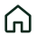

On répare la planète.
Depuis ton quartier.
Climat, biodiversité, inégalités : depuis près de 25 ans, on rassemble citoyens, entreprises et territoires pour passer à l'action, ensemble, là où on vit.
déraille
s'effondre
se creusent
L'intelligence collective, appliquée à ton territoire.
On fait se rencontrer celles et ceux qui vivent, travaillent et décident au même endroit, pour qu'ils inventent ensemble la transition écologique, sociale et économique.
Tu es citoyen·ne
Ateliers, rencontres, carte collaborative : viens apprendre, proposer et agir près de chez toi.
Tu es une entreprise
RSE, économie circulaire, formation : on t'aide à transformer ton activité avec ton écosystème.

Tu es un territoire
Éco-développement, tourisme durable, trame verte et bleue : on accompagne les collectivités pas à pas.
Ce qu'on fait, concrètement.
Toutes les actions →Formation-action
On forme les jeunes et les acteurs socio-économiques à la transition écologique et solidaire — en faisant, pas juste en écoutant.
BiodiversitéTrame verte & bleue
Écologie territoriale : reconnecter les espaces naturels, préserver l'eau et le vivant.
Accompagner les territoires
Symbiose Vallée, Territoires en'VIE, recherche-intervention : économie circulaire et intelligence territoriale.
MéditerranéeCoopérer d'une rive à l'autre
Cultivamed pour l'agriculture durable, l'AREMDT, le Parc National de Taza en Algérie : l'éco-développement sans frontières.
Tu connais un spot qui mérite d'être protégé ?
Ajoute-le sur notre carte collaborative et citoyenne. Chaque point compte.
On se voit quand ?
Deviens citoyen·ne
de la Terre.
Adhérer, c'est soutenir l'asso, voter à l'AG et prendre part aux projets. Simple, rapide, utile.